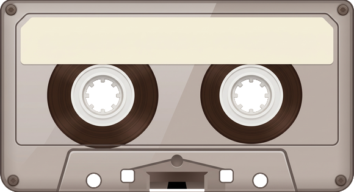
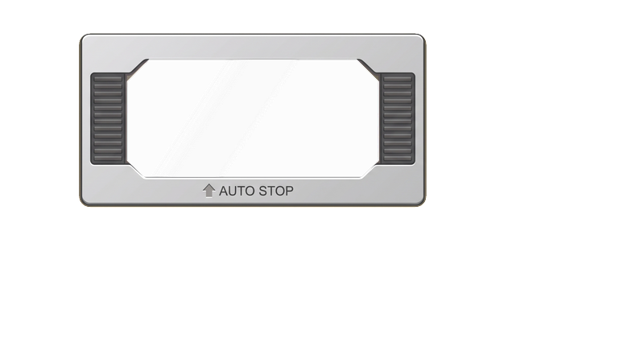
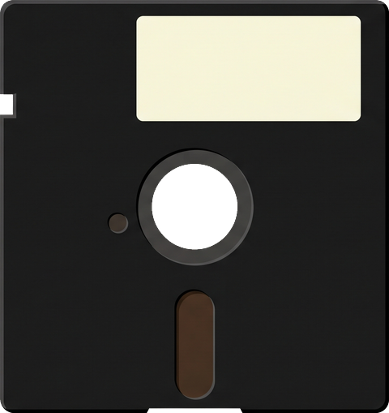

Insert Disk puts it in the drive. A tape goes in the datasette. If a game is running, it ends first.
Load loads the game and runs it. If it asks, choose Play or Instructions. If the button says Run, click it to start what was loaded.
Load "$",8 + List shows what is on the disk.
When the game asks for another disk or side, click Swap disk.
Pause freezes the game. Click it again to carry on.
Full Screen fills the window with the game. Exit Full Screen brings the disks back.
Eject, End Game takes the disk out and ends the game, back to READY.
Reset (F12) goes back to the boot screen. The disk stays in.
Power turns the C64 off and takes you back to the Arcade.
Joystick not working? Press F9 to try the other port.
Arrows moving the cursor instead of the joystick? Press F2.
Keys not typing? Let go of fire (Ctrl) first.
Keys

012345678900123456789001234567890

CAD — PowerLine
Cracked
no art yet
Artwork

—
Pick a disk to see what is on it.
Click a disk, then Insert.
Running
The shelf
The CAT terminal accepts typed commands. Type LOAD, quote, a program name,
quote, comma 8 and press Enter to load it, or LOAD "$",8 to list the
inserted disk.